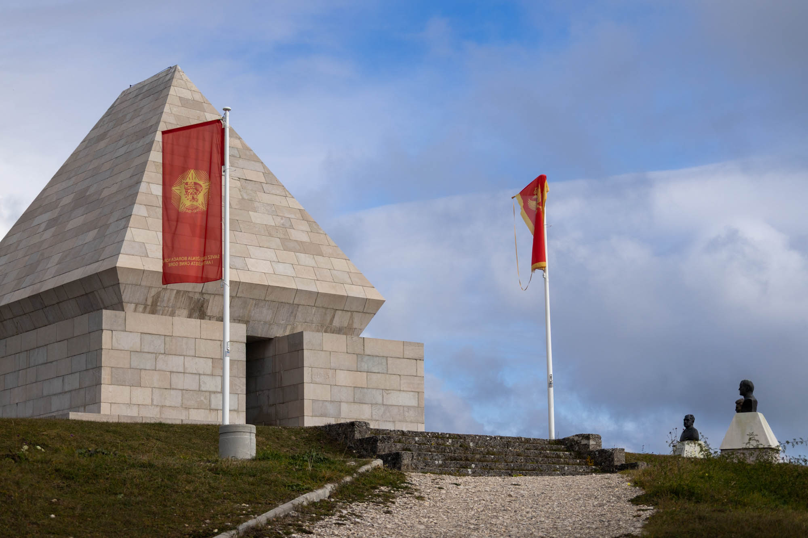
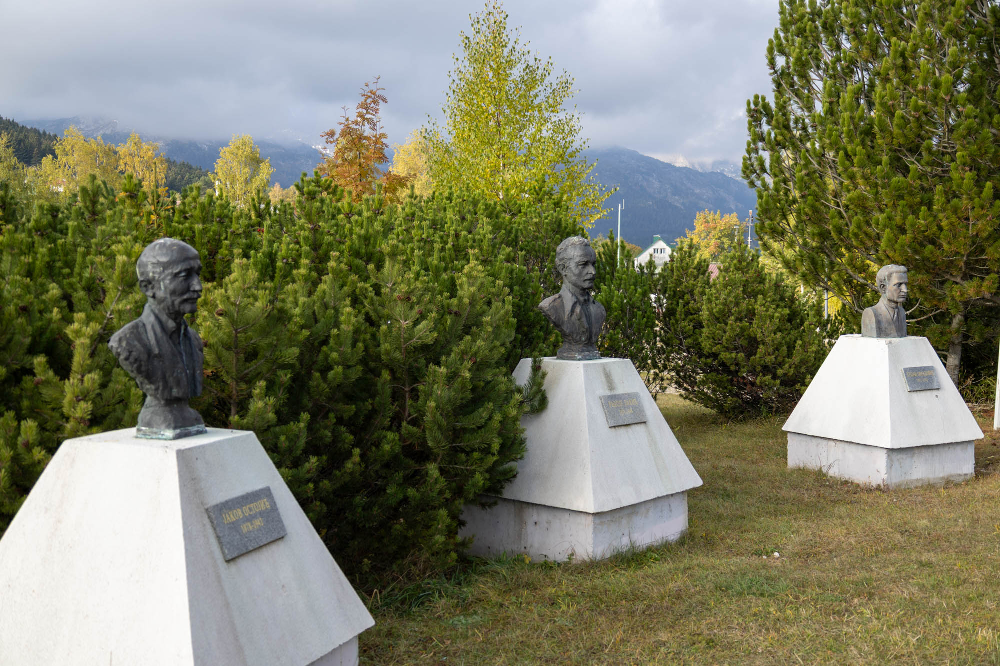
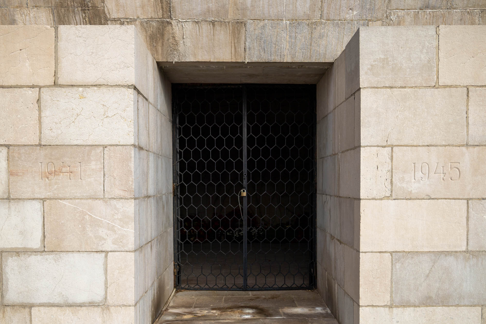
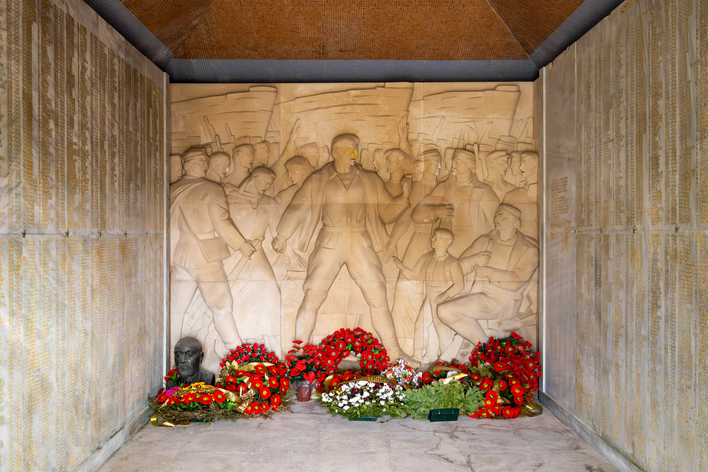
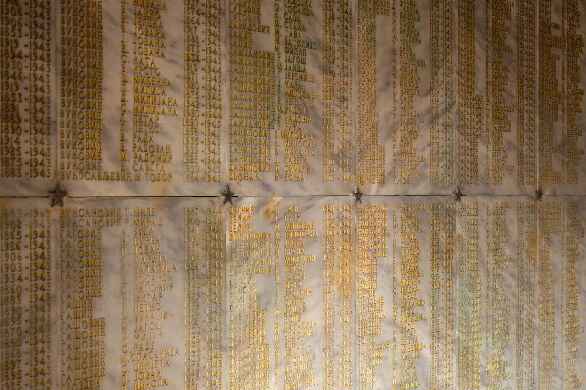

In the mountain village of Žabljak stands a pyramid-shaped mausoleum commemorating local victims of fascist terror. This spomenik is perched atop a small hill in the heart of Žabljak, between the town’s main road and the cemetery, at the edge of Durmitor National Park.


Surrounding the monument are hillside paths leading to the top and twelve busts of Montenegrin national heroes, each mounted on a pedestal.
The closest bust in the above photos is of Јаков Остојић, Žabljak’s first president of the People's Liberation Committee. He served in the Balkan Wars, World War I, and World War II, until he was killed by Chetnik forces in December 1942.

Inside the pyramid, a bas-relief by Austria-Serbian sculptor Radeta Stanković portrays partisan soldiers united in a common cause. Stanković was a frequent creator of memorial sculptures and murals throughout Serbia.

Flanking the bas-relief are engraved panels listing the names of 1,031 fallen soldiers and 1,465 civilian victims from the region who were killed under fascist occupation. Each panel is adorned with a five-pointed star, symbolising communism, the future everyone was fighting for.
